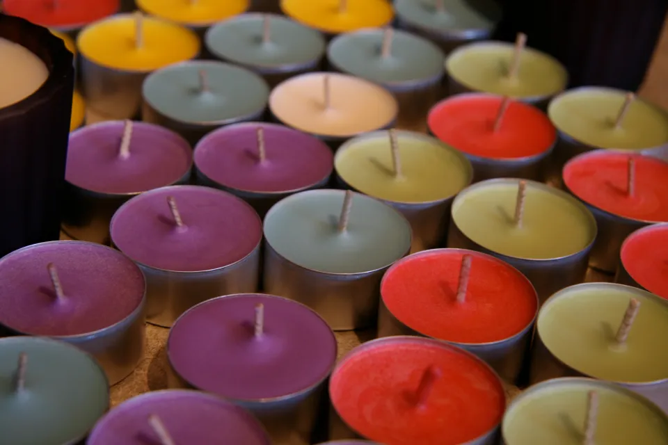
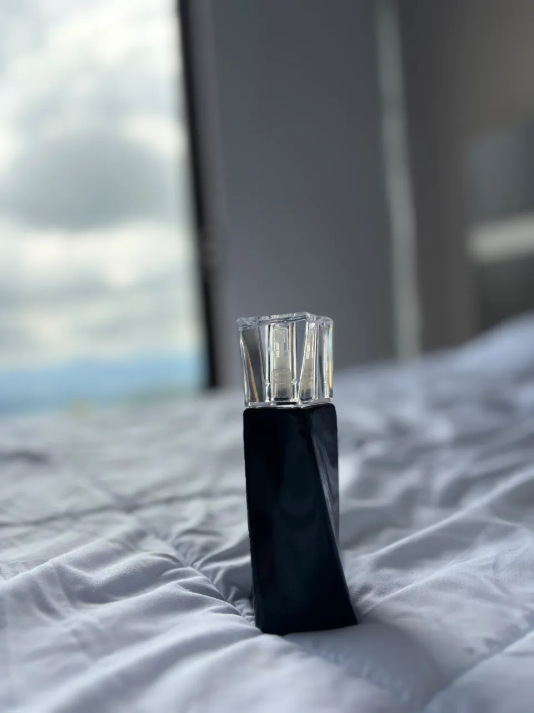
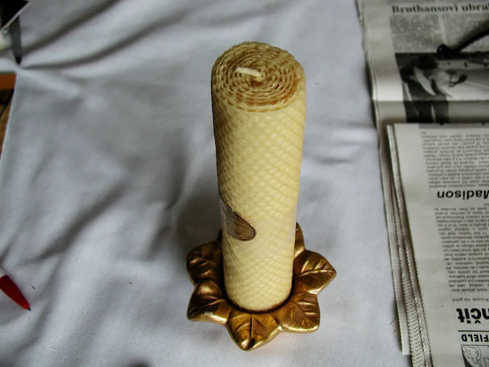
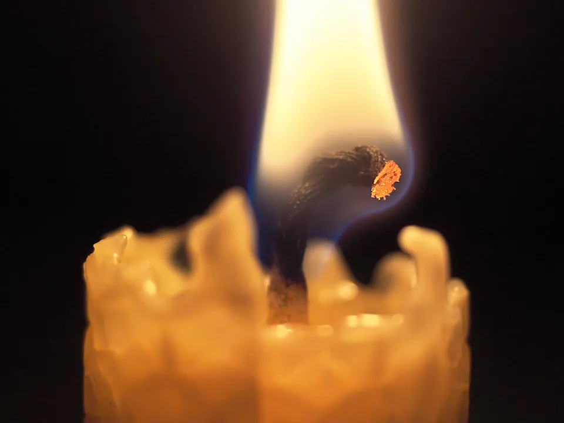
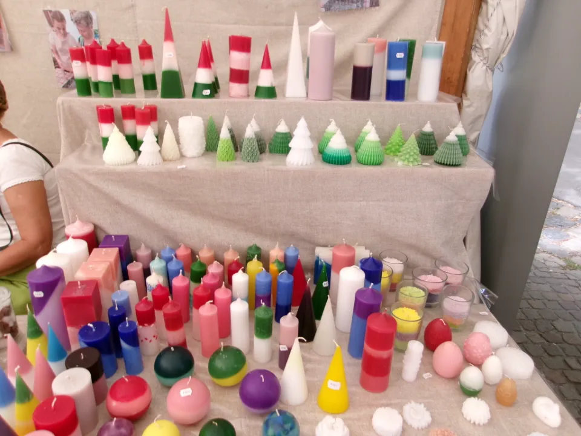
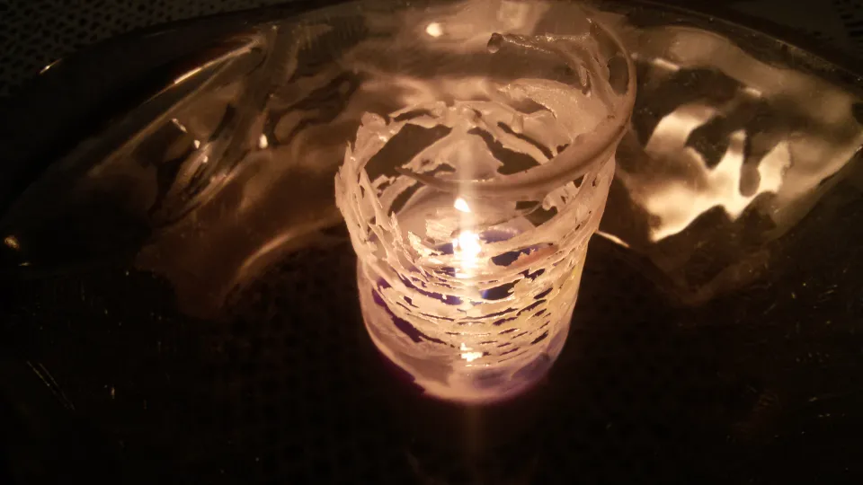
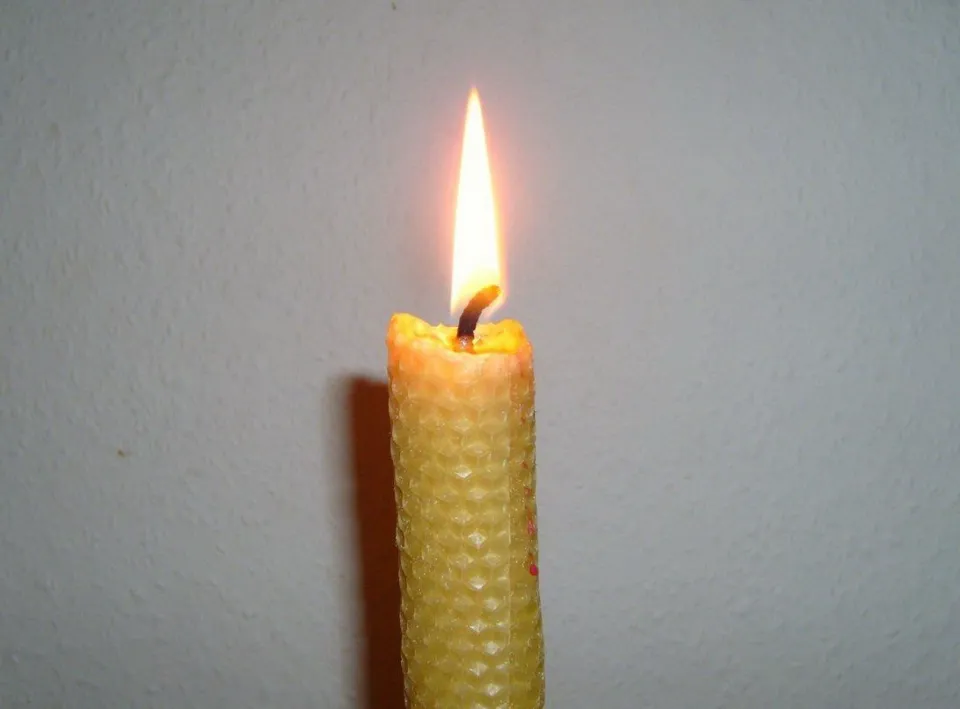
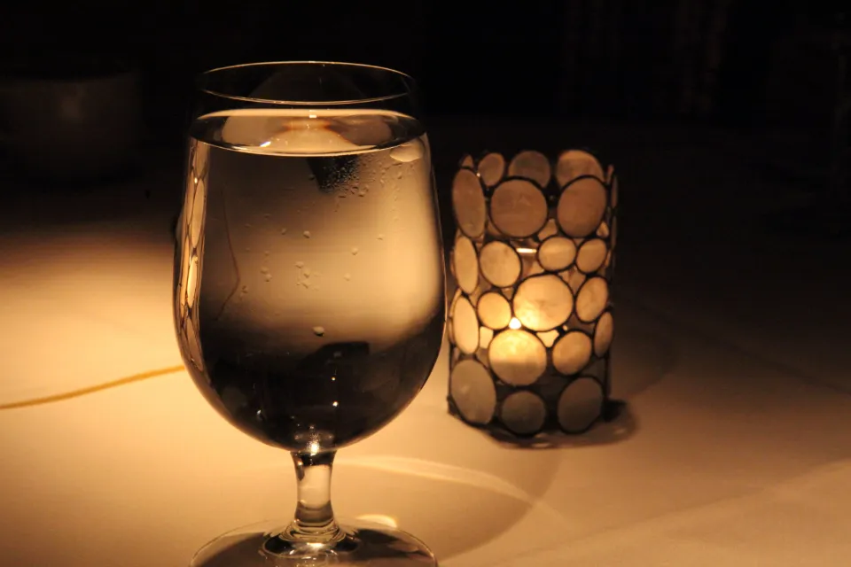

Container candles
Pour wax into a vessel you choose, set the wick and learn how wax, temperature and fragrance work together.
You’ll create: a hand-poured container candle
Enquire about this workshop
Candle-making workshops
Hands-on workshops for first-timers and experienced makers: melt, scent and pour a candle of your own.
Explore our workshops
Every workshop is hands-on from start to finish. Beginners are guided through each step; experienced makers can go further with technique and design.

Pour wax into a vessel you choose, set the wick and learn how wax, temperature and fragrance work together.
You’ll create: a hand-poured container candle
Enquire about this workshopExplore fragrance notes on their own and together, build a blend of your own, then pour it into a candle that smells exactly as you intended.
You’ll create: a candle scented with your own blend
Enquire about this workshop
Work with moulds, layers and colour to make freestanding candles that are as much an object as a light.
You’ll create: freestanding pillar or decorative candles
Enquire about this workshop
The workshop experience
You won’t be watching a demonstration. You’ll be at the bench, making — with guidance whenever you want it.
Each step is shown first, then you do it yourself, at the pace that suits you.
Why a wax behaves the way it does, how a wick is chosen, when fragrance goes in.

The first light of something you made yourself is the quiet reward of the evening.
What you’ll create
What you make depends on the workshop you choose and the decisions you take at the bench — colour, scent, vessel and form.

Colour and form
Shapes, layers and colours of your own.

Light through glass
Vessels that change how a candle glows.

Natural wax
The honeyed texture of beeswax, rolled or poured.
Who can join
No experience needed. You’ll be guided through every step, from choosing materials to the first light.
Use the workshop to go further: technique, design, layering and scent.
Age guidance, group sizes and accessibility details will be published here once confirmed.
If any of these matter for your visit, ask us before you book.

Book a workshop
Tell us which workshop you’d like and when suits you. We’ll reply by email to confirm details and availability.
Choose a workshop and tell us your preferred date.
With details and what’s available.
Only once we’ve both agreed the details — an enquiry alone isn’t a booking.